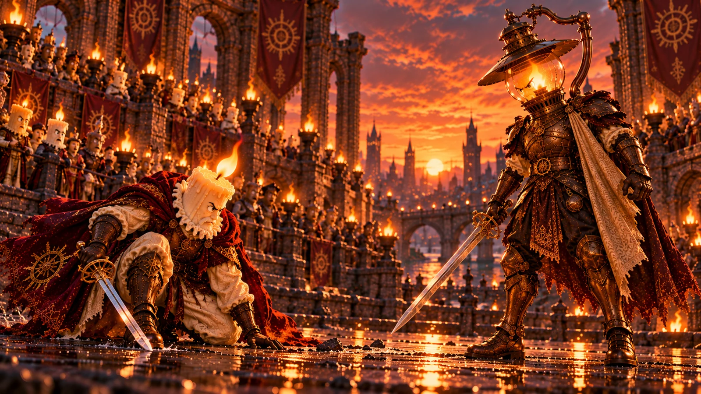
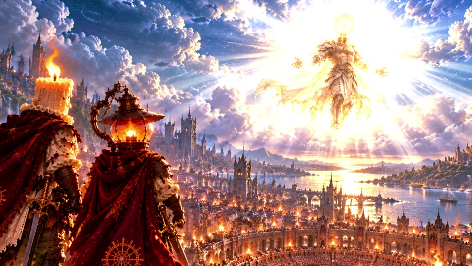
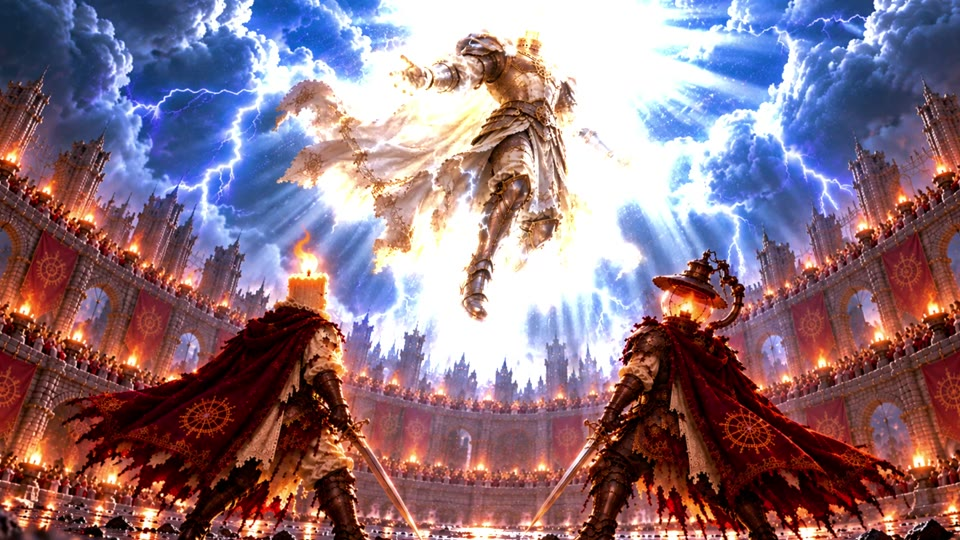

♪Trilha pronta▂ ▅ ▃ ▇ ▄ ▆ ▂ ▅
A música já existe
O usuário define a ideia.
 ESSENCIAL
ESSENCIALO Reagência reúne edição, geração de recursos e uma Agência de IA. Você escolhe o que faz à mão e o que quer delegar.
Entradas, tamanhos e encaixes organizados a partir de uma conversa.
Cada imagem começa ampliada e ocupa seu lugar. As anteriores continuam visíveis.
Da edição manual à montagem por conversa, você escolhe como conduzir o trabalho.
Os três primeiros percursos exploram o mesmo roteiro. O quarto é outro projeto, criado com ChatGPT e mapas do editor.
Você conduz a edição e confere o resultado antes de pedir a próxima etapa.
Crie as imagens, a voz e as legendas. Monte o vídeo com transições e movimento.
O usuário orientou a criação. Um chat externo preparou o projeto para abrir no Reagência.
O usuário define a ideia.

Orienta a criação e escolhe as imagens.

O ChatGPT segue os mapas do editor.

Abrir, refinar detalhes e exportar.
A montagem continua editável. Você pode alterar uma cena, ajustar um movimento e dar seu acabamento.
Você pode trazer seus arquivos ou gerar imagens, voz e legendas pelas conexões do editor.
As conexões de geração e a assistência de IA são opcionais.
Conte o que você precisa criar ou peça uma demonstração. Conheça como o Reagência pode participar do seu trabalho.
romanwladyslawbrocki@gmail.com
Você decide o que criar.
O Reagência ajuda a realizar.

O usuário organiza a sequência, escolhe as transições e ajusta os clipes diretamente no editor. Neste percurso, os recursos foram preparados antes da montagem.
Montagem manual com seis imagens, narração e legendas.
Abrir na apresentação completaOs pedidos organizaram a montagem em 55 segundos, adicionaram as transições em 22 segundos e executaram as transformações em 40 segundos.
Tempos desta experiência. Não representam uma promessa de duração para outros projetos.
Abrir na apresentação completaO usuário forneceu o roteiro e orientou voz, imagens, legendas, montagem e movimento. A Agência gerou novos recursos e montou o vídeo em aproximadamente 5 minutos e 30 segundos nesta experiência.
Somente o roteiro foi reaproveitado. Os recursos e as conexões diferem do percurso híbrido, portanto os tempos não formam uma comparação direta de desempenho.
Abrir na apresentação completaO usuário já tinha a música. Orientou a criação das cenas, selecionou as melhores imagens e descreveu a edição ao ChatGPT comum.
Estimativa do usuário sobre o acabamento final. Segundo seu relato, o projeto chegou quase perfeito na primeira entrega.
Cada mosaico combina entradas, recortes, posições e mudanças de tamanho. O usuário explicou o comportamento desejado e o chat organizou essas operações no projeto.


As frases da demonstração resumem a operação. O projeto usou os mapas e as regras do Reagência, e o acabamento final recebeu ajustes do usuário.
Abrir na apresentação completaCriação e escolhas do usuário. Montagem pelo ChatGPT a partir dos mapas. Abertura, acabamento e exportação no Reagência.
Assistir no YouTube ↗É possível ajustar o enquadramento, animar zoom, posição e rotação, e trabalhar o tratamento de cor. O resultado pode ser conferido na prévia.
Ajustes de um clipe selecionado no percurso manual.
Abrir na apresentação completaDepois de conferir a montagem, o usuário escolhe as opções de exportação. O editor oferece MP4, MOV e WebM.
Opções reais de exportação no Reagência.
Abrir na apresentação completaNa preparação do manual e do híbrido, a primeira imagem nasceu de um texto. Cada uma das cinco seguintes usou a anterior como referência para manter a continuidade visual.
Segunda imagem gerada usando a anterior como referência.
Abrir na apresentação completaO roteiro aprovado deu origem a uma narração de 67,2 segundos. Nesta experiência, a geração da voz levou 11 segundos.
Narração com a voz Ash na preparação compartilhada.
Abrir na apresentação completaA partir da narração, o editor criou legendas editáveis. Nesta experiência, a transcrição levou 5 segundos e organizou a fala em 18 segmentos.
Transcrição da narração em legendas.
Abrir na apresentação completaA edição manual, a geração de recursos e a Agência são escolhas distintas. A Agência é a assistência de IA integrada que recebe orientações e pode executar operações no editor.
Na demonstração plena, a conexão gera imagens, voz e legendas. O piloto da Agência demonstrado usa API.
O cliente instalado pode gerar imagens. Foi a conexão usada para preparar as imagens do manual e do híbrido.
Quando instalado e conectado, permite executar fluxos previamente configurados.
No quarto percurso, a conversa acontece fora do editor. Os mapas e as regras orientam um projeto que será aberto no Reagência.
As funções de IA dependem das conexões e dos serviços utilizados. O material apresenta as experiências demonstradas.
Abrir na apresentação completa